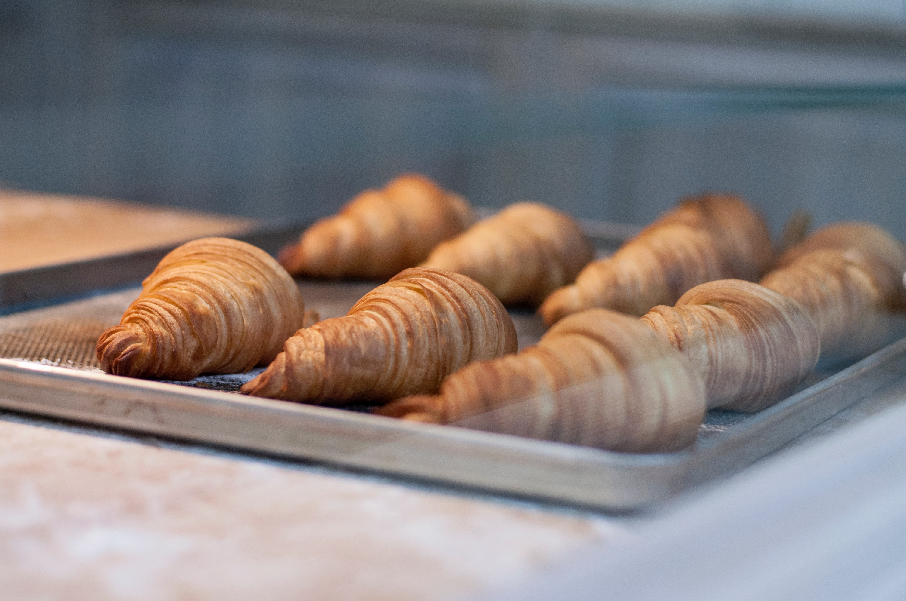

A croissant is a buttery, flaky, French pastry, usually eaten in the
morning.

🥐The origin of the croissant can actually be traced back to 13th century
Austria, where it was called kipferl, the German word
for crescent.
🥐Croissants are part of the category of pastries that the French call
Viennoiseries, a nod to their origins in Vienna.
🥐Croissants are a common part of a continental breakfast in many European
countries. The croissant was already a breakfast staple by the late
1860s and Charles Dickens referred to the
dainty croissant on the boudoir table in
All the Year Round in 1872.